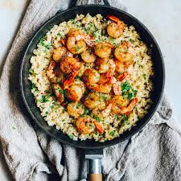
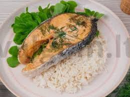
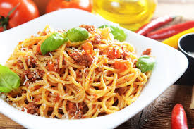
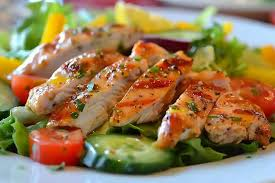
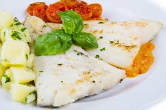

Cukinijų blynai
Lengvi, purūs ir šiek tiek traškūs blynai.
Paruošimas:
- Tarkuokite cukiniją, nuspauskite skystį.
- Įmaišykite kiaušinį, miltų, prieskonių.
- Formuokite ir kepkite iš abiejų pusių.
Jautienos kepsnys
Sultingas, išraiškingo skonio pagrindinis patiekalas.
Paruošimas:
- Marinuokite jautieną su prieskoniais.
- Kepkite keptuvėje arba grilyje.
- Palikite „pailsėti“ 5 min prieš pjaustant.
Krevetės su daržovėmis ir ryžiais

Lengvas, egzotiškas ir maistingas patiekalas.
Paruošimas:
- Atskirai išvirkite ryžius.
- Kepkite krevetes su paprika, cukinija, česnaku.
- Sumaišykite su ryžiais, pagardinkite sojų padažu.
Lašiša su daržovėmis ir ryžiais

Baltymų turtingas pietų pasirinkimas.
Paruošimas:
- Kepkite lašišos filė su citrina ir prieskoniais.
- Atitinkamai patroškinkite brokolius, morkas.
- Patiekite su virtais ryžiais.
Spagečiai su jautienos faršu

Sotus itališkas klasikinis skonis.
Paruošimas:
- Išvirkite spagečius.
- Troškinkite faršą su pomidorų padažu ir svogūnu.
- Sumaišykite ir apibarstykite parmezanu.
Tortilija su vištiena
Greita, lanksti idėja su pasirinktais priedais.
Paruošimas:
- Apkepkite vištieną su prieskoniais.
- Sudėkite į tortiliją su daržovėmis, padažu.
- Susukite ir pašildykite keptuvėje.
Kepta vištiena su salotomis

Lengvas, šviežias, bet sotus derinys.
Paruošimas:
- Kepkite vištieną orkaitėje arba keptuvėje.
- Patiekite su šviežiomis lapinėmis salotomis.
Vištienos kepsnys
Auksinis, traškus, mėgstamas vaikų ir suaugusiųjų.
Paruošimas:
- Marinuokite vištieną su jogurtu ar kefyru.
- Apvoliokite džiūvėsėliuose.
- Kepkite keptuvėje arba orkaitėje.
Balta žuvis su lapinėmis salotomis

Lengva, sveika ir vasariška alternatyva mėsai.
Paruošimas:
- Kepkite žuvį ant grilio ar keptuvėje.
- Patiekite su žaliomis salotomis ir alyvuogių aliejumi.